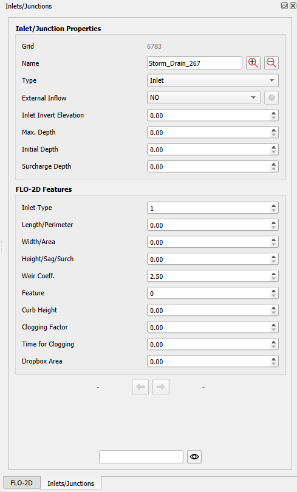
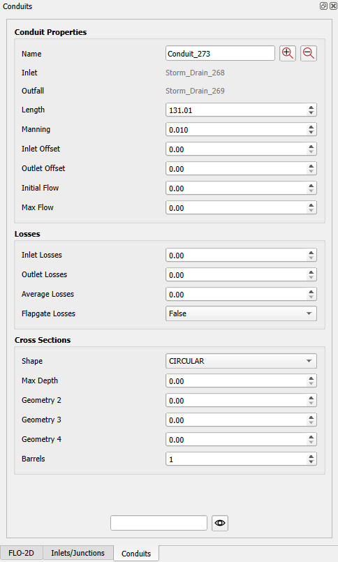
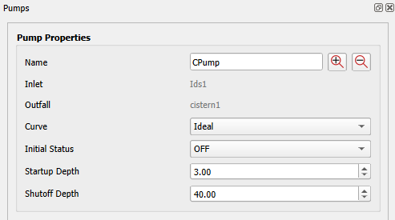
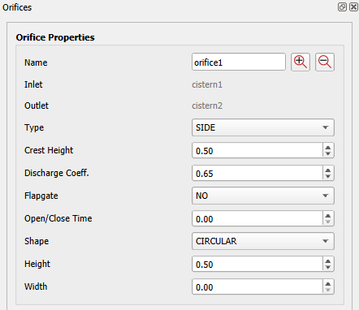
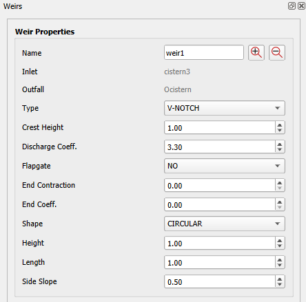
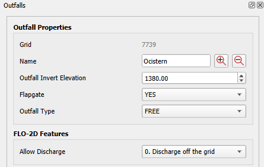
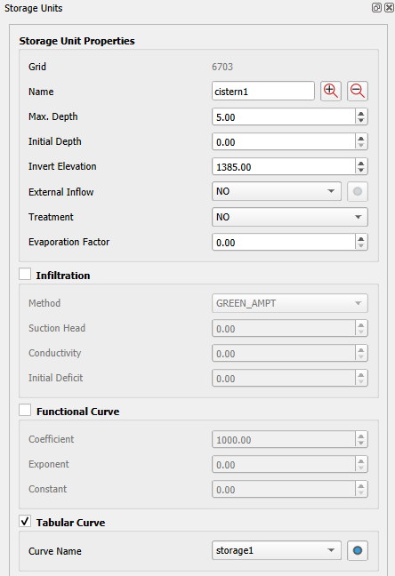

Properties
The properties of each feature of the storm drain system can be edited using their docked widget properties dialog. To modify the properties, use the Find Object or Info Tool to open the properties docked widget for the desired feature.
Find Object
Add the name of the object on the text box and click on the eye button.
The object will be marked in red on the Map Canvas and the property docked widget will populate on the right side of the screen.
Note
This tool iterates over all Storm Drain User Layers to find the selected object.
Info Tool
Click on the Info Tool in the FLO-2D Toolbar. Once the cursor changes to a crosshair and the button on the toolbar is toggled, the tool is active.

Click on the portion of the map containing the Storm Drain user layers and select the desired layer & object.

Once the desired layer and object are selected, the property form docked widget will populate on the right side of the screen.
Note
This tool shows all Storm Drain User Layers to find the desired object.
Attributes Form
The property docked widget is visible on the right portion of the screen.

Important
Any changes made in the property docked widget will be instantly updated in the attribute table.
Zoom in or out on the object using the ‘+’ and ‘-’ buttons.

Movement forward and backward in the pipeline is possible using the arrow buttons.

Note
Movement forward and backward in the pipeline follows the fid order on the user layer and only works for nodes.
The bottom text line locates any object of the same type. Type the object name and click on the eye icon.
The next sections will describe in detail each of the property form docked widgets for each of the storm drain layers.
Inlets/Junctions
The Inlets/Junctions properties docked widget is shown in the following image.
The data description is shown in the following table.
Docked Widget |
Attribute Table |
Description |
|---|---|---|
Grid |
grid |
Grid element number |
Name |
name |
Inlet/junction name |
Type |
sd_type |
Storm drain type (junction or inlet) |
External Inflow |
external_inflow |
External inflow |
Inlet Invert Elev. |
junction_invert_elev |
Invert elevation |
Max. Depth |
max_depth |
Maximum depth |
Initial Depth |
init_depth |
Initial Depth |
Surcharge Depth |
surcharge_depth |
Surcharge depth |
Inlet Type |
intype |
Inlet type (1, 2, 3, 4, and 5) |
Length/Perimeter |
swmm_length |
Type 1 and 2 - Storm drain inlet curb opening lengths along the curb. Type 3 and 5 grate (gutter) inlets, SWMMlength = grate wetter perimeter or manhole wetted perimeter. |
Width/Area |
swmm_width |
Type 2 storm drain inlet curb opening sag width. Type 3 grate (gutter) inlets, SWMMwidth = grate area. Type 5 manhole area. |
Height/Sag/Surch |
swmm_height |
Type 1 and type 2 gutter inlets storm drain curb opening heights (typically less than 1 ft). Type 3 grate inlets, SWMMheight = grate sag height. Type 5 manhole inlets, SWMMheight = surcharge depth. |
Weir Coeff. |
swmm_coeff |
Storm drain weir discharge coefficient |
Feature |
swmm_feature |
INTYPE = 4: 0 = default, no flap gate, no vertical inlet opening 1 = vertical inlet opening (see comment 3) 2 = vertical inlet with a flapgate INTYPE = 1, 2, 3 and 5 0 = default 3 = stop reducing discharge when drob box capacity filled |
Curb Height |
curbheight |
Curb height used to calculate discharge on inlets for all INTYPE inlets. |
Clogging Factor |
swmm_clogging_factor |
Clogging factor for each inlet node. The value is a percentage |
Time for Clogging |
swmm_time_for_clogging |
Time to initiate clogging specified by the user |
Dropbox Area |
drboxarea |
Drop box surface area for inlet contain in grid element SWMMDBID |
Conduits
The Conduits properties docked widget is shown in the following image.
The data description is shown in the following table.
Docked Widget |
Attribute Table |
Description |
|---|---|---|
Name |
conduit_name |
Conduit name |
Inlet |
conduit_inlet |
Upstream node |
Outlet |
conduit_outlet |
Downstream node |
Length |
conduit_length |
Conduit length |
Manning |
conduit_manning |
Conduit roughness |
Inlet Offset |
conduit_inlet_offset |
Upstream node offset |
Outlet Offset |
conduit_outlet_offset |
Downstream node offset |
Initial Flow |
conduit_init_flow |
Conduit initial flow |
Max Flow |
conduit_max_flow |
Conduit maximum flow |
Inlet Losses |
losses_inlet |
Upstream node losses |
Outlet Losses |
losses_outlet |
Downstream node losses |
Average Losses |
losses_average |
Conduit average losses |
Flapgate Losses |
losses_flapgate |
Flapgate losses |
Shape |
xsections_shape |
Conduit shape |
Max Depth |
xsections_max_depth |
Conduit maximum depth |
Geometry 2 |
xsections_geom2 |
Geometry 2 |
Geometry 3 |
xsections_geom3 |
Geometry 3 |
Geometry 4 |
xsections_geom4 |
Geometry 4 |
Barrels |
xsections_barrels |
Number of barrels |
Pumps
The Pumps properties docked widget is shown in the following image.
The data description is shown in the following table.
Docked Widget |
Attribute Table |
Description |
|---|---|---|
Name |
pump_name |
Pump name |
Inlet |
pump_inlet |
Upstream node |
Outfall |
pump_outlet |
Downstream node |
Curve |
pump_curve |
Pump curve |
Initial Status |
pump_init_status |
Pump initial status (on & off) |
Startup Depth |
pump_startup_depth |
Startup Depth |
Shutoff Depth |
pump_shutoff_depth |
Shutoff Depth |
Orifices
The Orifices properties docked widget is shown in the following image.
The data description is shown in the following table.
Docked Widget |
Attribute Table |
Description |
|---|---|---|
Name |
orifice_name |
Orifice name |
Inlet |
orifice_inlet |
Upstream node |
Outlet |
orifice_outlet |
Downstream node |
Type |
orifice_type |
Orifice type (side, bottom) |
Crest Height |
orifice_crest_height |
Orifice crest height |
Discharge Coeff. |
orifice_disch_coeff |
Orifice discharge coefficient |
Flapgate |
orifice_flap_gate |
Orifice flapgate |
Open/Close Time |
orifice_open_close_time |
Orifice open and close time |
Shape |
orifice_shape |
Orifice shape (circular, rect_closed) |
Height |
orifice_height |
Orifice height |
Width |
orifice_width |
Orifice width |
Weirs
The Weirs properties docked widget is shown in the following image.
The data description is shown in the following table.
Docked Widget |
Attribute Table |
Description |
|---|---|---|
Name |
weir_name |
Weir name |
Inlet |
weir_inlet |
Upstream node |
Outfall |
weir_outlet |
Downstream node |
Type |
weir_type |
Weir type (v-notch, transverse, sideflow, trapezoidal) |
Crest Height |
weir_crest_height |
Weir crest height |
Discharge Coeff. |
weir_disch_coeff |
Weir discharge coefficient |
Flapgate |
weir_flap_gate |
Weir flapgate |
End Contraction |
weir_end_contrac |
Weir end contraction |
End Coeff. |
weir_end_coeff |
Weir end coefficientt |
Shape |
weir_shape |
Weir shape (circular, rect_closed) |
Height |
weir_height |
Weir height |
Length |
weir_length |
Weir length |
Side Slope |
weir_side_slope |
Weir side slope |
Outfalls
The Outfalls properties docked widget is shown in the following image.
The data description is shown in the following table.
Docked Widget |
Attribute Table |
Description |
|---|---|---|
Grid |
grid |
Grid element number |
Name |
name |
Outfall name |
Outfall Invert Elev. |
outfall_invert_elev |
Outfall invert elevation |
Flapgate |
flapgate |
Outfall flapgate |
Outfall Type |
outfall_type |
Outfall type (free, fixed, normal, tidal, timeseries) |
Fixed Stage |
fixed_stage |
Fixed stage |
Tidal Curve |
tidal_curve |
Tidal curve |
Time Series |
time_series |
Time series |
Allow Discharge |
swmm_allow_discharge |
Allow discharge (discharge off the grid, discharge to the grid, discharge to the grid but ignoring the underground depth) |
Storage Units
The Storage Units properties docked widget is shown in the following image.
The data description is shown in the following table.
Docked Widget |
Attribute Table |
Description |
|---|---|---|
Grid |
grid |
Grid element number |
Name |
name |
Storage Unit name |
Max. Depth |
max_depth |
Storage Unit maximum depth |
Initial Depth |
init_depth |
Storage Unit initial depth |
Invert Elevation |
invert_elev |
Storage Unit invert elevation |
External Inflow |
external_inflow |
Storage Unit external inflow |
Treatment |
treatment |
Storage Unit treatment |
Evaporation Factor |
evap_factor |
Storage Unit evaporation factor |
Infiltration |
infiltration |
Storage Unit infiltration (true, false) |
Method |
infil_method |
Infiltration method |
Suction Head |
suction_head |
Suction head |
Conductivity |
conductivity |
Storage conductivity |
Initial Deficit |
initial_deficit |
Initial deficit |
Functional Curve |
storage_curve |
Functional curve |
Coefficient |
coefficient |
Functional curve coefficient |
Exponent |
exponent |
Functional curve exponent |
Constant |
constant |
Functional curve constant |
Tabular Curve |
storage_curve |
Tabular curve |
Curve Name |
curve_name |
Tabular curve name |
Note
Use the infiltration checkbox to set infiltration to True and uncheck it to set it to False.
Note
Use the “Functional Curve” and “Tabular Curve” checkboxes to define the type of curve to be used.